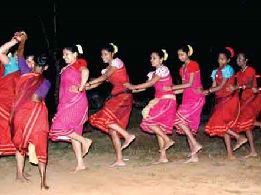

DHALO

Dhalo is a popular ritual folk dance form Goa, India.[1] The dance is performed by women and serves as a prayer of protection for their households. The songs to which the dance is performed are usually sung in Konkani language or Marathi.The themes of such songs are commonly religious or social in nature. It is conducted over a period of 1 week in the month of Pousha at the onset of winter.[2][3] On the final day women dress up elaborately and draw caricatures of men.
Dhalo was chosen to be presented at the folk dance festival at New Delhi.[4]